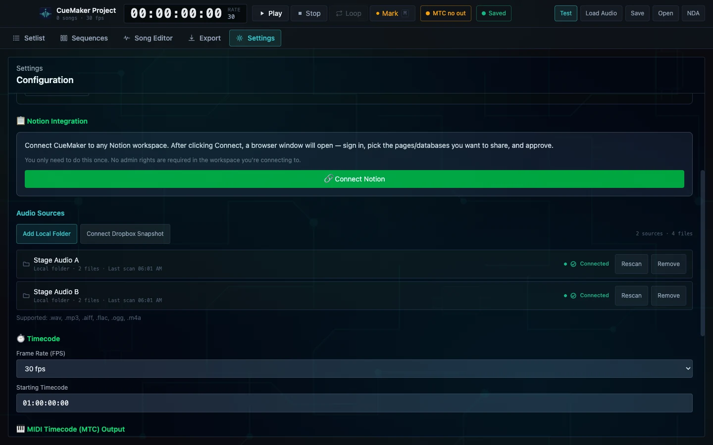

Move one — connect the sources
Roots that survive being unplugged
A real setlist lives across drives and folders, and half of them will be missing when you open the laptop on a bus. CueMaker keeps source roots as named connections with an explicit state, so an offline drive is visible rather than a silent failure.
- Several connected source roots so a setlist can span drives and folders
- Per-root file counts and last-scan times, with a manual rescan
- Offline source states surfaced explicitly instead of failing silently
- Frame rate and starting timecode configured once for the whole project
Boundary Analysis runs locally. Tracks are never uploaded to author a show.

Two local folders connected as named roots, four files scanned, timecode set at 30 fps from 01:00:00:00. Generic source labels; no private path, customer or show identity.